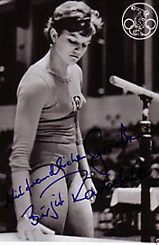

Birgit Radochla (GDR)
1964 Olympic V Silver
Medalist
1965 European AA Bronze Medalist

Medal Total
Olympic Games: 1
Silver
European Championships: 2 Bronze
Birgit was born on January 31, 1945, in Döbern. She started training in gymnastics at BSG Chemie Döbern with coach Klaus Helbeck. In the summer of 1962 she transferred to SC Dynamo Berlin. Birgit was the first East German gymnast to win an Olympic medal. Her gymnastics talent must have been inherited from her father, Helmut, who was the GDR champion on pommel horse in 1949.
Competition Results
1961
GDR Championships: 1st AA, 1st B, 2nd V, 2nd UB, 3rd FX
1962
CSSR-GDR-Ukraine Meet: 2nd Team, 13th AA
GDR Championships: 3rd AA, 2nd FX, 3rd V, 3rd UB, 3rd B
SWE-GDR Dual Meet: 1st Team, 6th AA
World Championships: 5th Team, 18th AA, 4th V
1963
East Bloc Spartakiade: 2nd AA
GDR-BUL Dual Meet: 1st Team, 2nd AA
GDR Championships: 1st AA, 1st V, 1st FX, 2nd B, 3rd UB
GDR-CSSR Dual Meet: 2nd Team, 1st AA
GDR-ROM Dual Meet: 1st Team, 1st AA
GDR-SWE Dual Meet: 1st Team, 2nd AA
HUN-GDR Dual Meet: 1st Team, 1st AA
International Sports Day Tournament: 1st AA, 1st V, 1st FX, 2nd UB
1964
CSSR-GDR Dual Meet: 2nd Team, 4th AA
Dynamo Spartakiade: 2nd AA
GDR Championships: 2nd AA, 1st V, 1st UB, 2nd B, 2nd FX
GDR-SWE Dual Meet: 1st Team, 1st AA
GDR-USSR Dual Meet: 1st Team, 1st AA
German Olympic Selection Meet: 6th AA
Olympic Games: 4th Team, 4th AA, 2nd V, 4th FX
POL-GDR-HUN: 1st Team, 1st AA
ROM-GDR Dual Meet: 1st Team, 3rd AA
Sofia International Meet: 1st AA
1965
European Championships: 3rd AA, 3rd B, 4th UB, 6th V
GDR-SWE Dual Meet: 1st Team, 1st AA
1967
DTV Cup: 3rd AA
Dynamo Berlin-Dinamo USSR match: 1st Team, 2nd AA
GDR Championships: 6th FX
GDR-SWE Dual Meet: 1st Team, 7th AA
Schwerin International: 2nd AA, 1st UB
1968
GDR Championships: 9th AA
GDR-FRA Dual Meet: 1st Team, 7th AA
This page was created on November
12, 2005 and was last updated on April 25, 2026.
© Gymn Forum